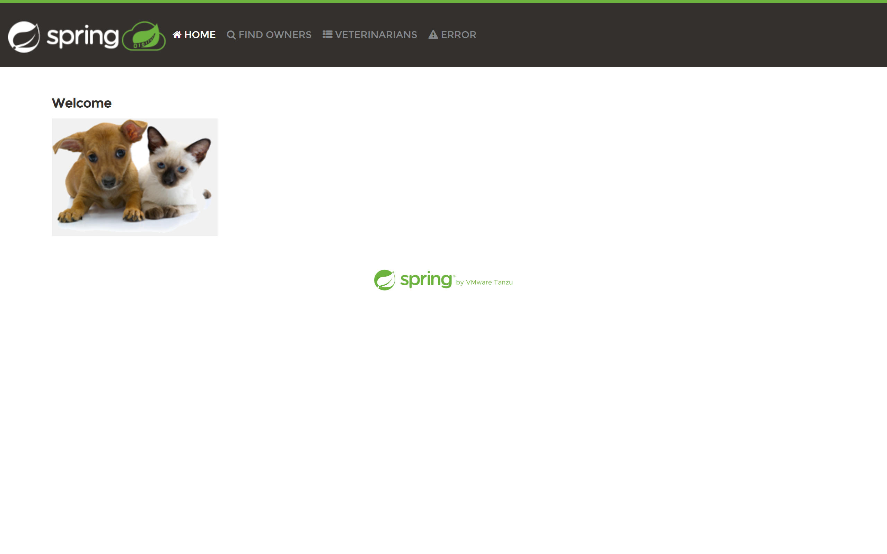
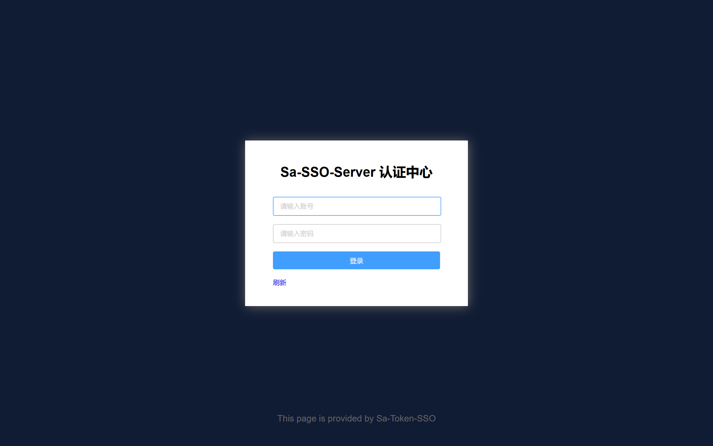
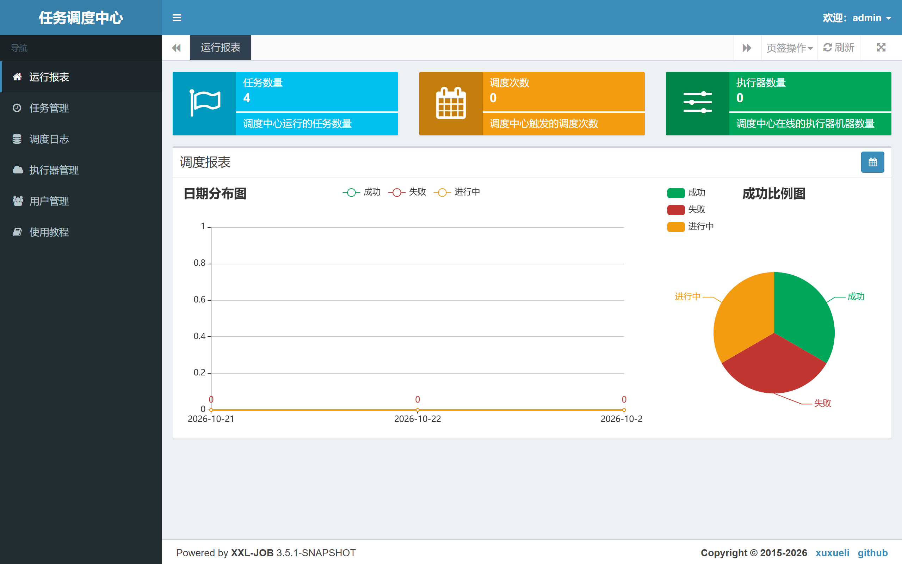
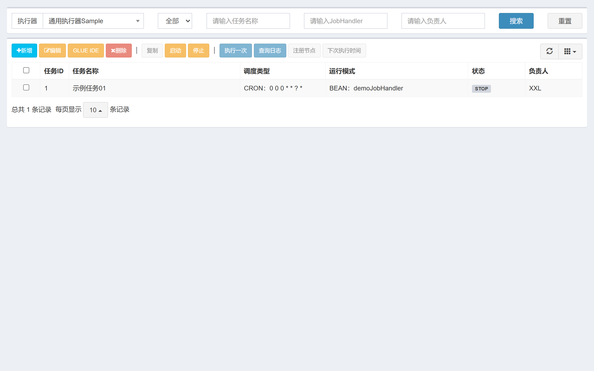

| # | 项目 | 子方向 | 运行方式 | 验证结果（实测证据） | 状态 |
|---|---|---|---|---|---|
| 1 | spring-petclinic spring-boot-api |
Spring 宠物诊所 | jar → 8081 | 首页 HTTP 200，标题 PetClinic :: a Spring Framework demonstration，页面正常渲染 | ✔ |
| 2 | Sa-Token enterprise-admin |
登录鉴权 demo | 8082 | 登录 zhang/123456 得 token → /at/checkPermission 200；不带 token 访问同接口 401（鉴权生效） | ✔ |
| 3 | Sa-Token SSO enterprise-admin |
单点登录 三模式 | 9000 + 9003 | server 认证中心 200；client /sso/login 302 → sso/auth?client=sso-client3，跨端跳转链路打通 | ✔ |
| 4 | java-design-patterns java-tooling |
243 种设计模式 | CLI |
strategy / builder 两种模式实跑，日志输出正确（含 MSYS2_ARG_CONV_EXCL classpath 修复） | ✔ |
| 5 | hutool java-tooling |
工具集 5.8.32 | CLI jar |
StrUtil / JSONUtil / DateUtil / SecureUtil(md5) 全部输出正确 | ✔ |
| 6 | picocli java-tooling |
命令行框架 | CLI |
Greet -u=WorkBuddy → Hello, WorkBuddy；--help 自动生成用法 | ✔ |
| 7 | netty integration-etl |
4.2.6 echo 服务 | 8007 | EchoServer/EchoClient 连接成功，服务端日志确认 READ 收发（源码为 4.2 SNAPSHOT，改用官方 4.2.6.Final 依赖） | ✔ |
| 8 | easyexcel data-middleware |
Excel 读写 | CLI |
2 万行写入 3112ms、读回 1108ms，平均分 79.5，生成 354KB xlsx | ✔ |
| 9 | redisson data-middleware |
分布式对象 3.35.0 | Redis 6379 | RBucket 带 TTL / RMap / RAtomicLong 计 1000 准确；5 线程抢 RLock，临界区最大并发 = 1（互斥实锤） | ✔ |
| 10 | xxl-job data-middleware |
分布式调度 3.5.1 | 8080 | MySQL 建库导入 8 张表 → admin 启动 xxl-job admin start success → admin/123456 登录 200 → 任务管理/执行器/日志三页全 200 | ✔ |
| 附赠 | 项目 | 结果 | 状态 |
|---|---|---|---|
| ＋ | spring-batch integration-etl |
自写批处理 demo：CSV 503 行（含 2 条坏行）→ 加工 → 写出；read=502 / write=500 / skip=2 / rollback=2 / 187ms，chunk=100 + skip 容错全生效，状态 COMPLETED | ✔ |




_start-web.sh / _start-xxl.sh 拉起，日志在同目录 _log-*.txt